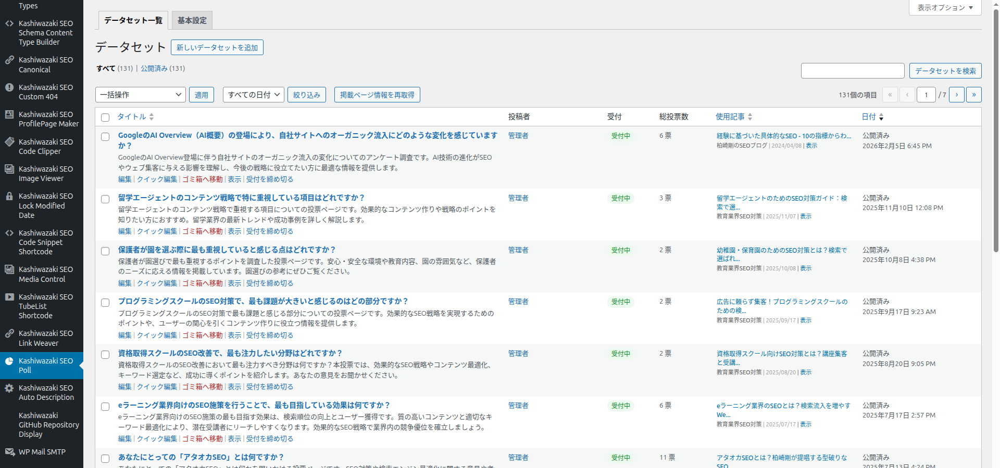
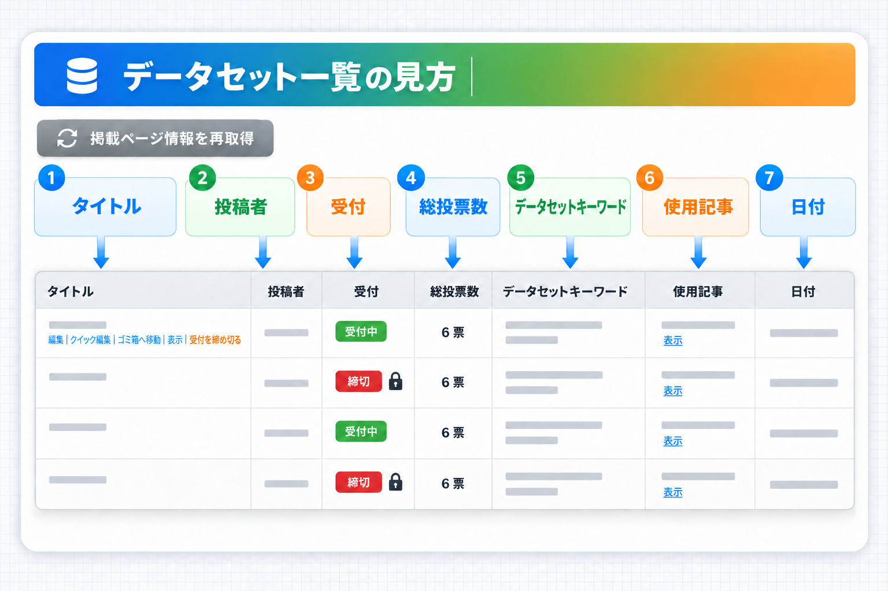
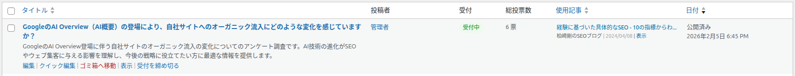
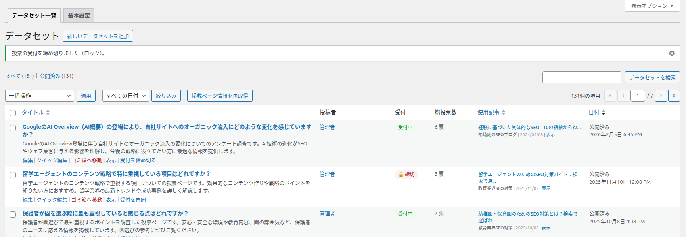
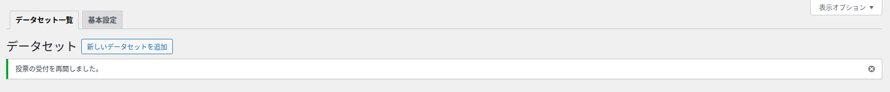
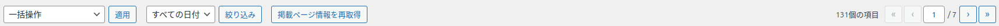
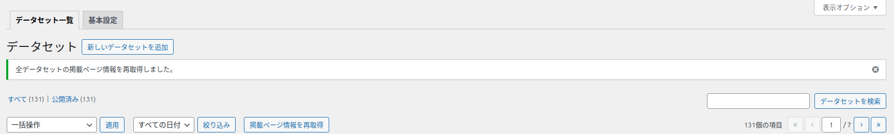

データセット一覧
作成したデータセット（投票）を一覧で確認する画面です。受付中か締め切り中か、総投票数、どの記事に掲載されているかがひと目で分かり、受付の締め切り・再開もこの画面からワンクリックで行えます。

画面の地図

| 番号 | 領域 | 内容 |
|---|---|---|
| 1 | タブ | 「データセット一覧」「基本設定」の切り替え（管理メニューとタブ） |
| 2 | 見出しとボタン | 「データセット」と「新しいデータセットを追加」 |
| 3 | 状態の切り替え | すべて／公開済み／下書き／ゴミ箱 など（WordPress 標準） |
| 4 | 上部の操作 | 一括操作、日付の絞り込み、「掲載ページ情報を再取得」、ページ送り |
| 5 | 表 | データセットごとの行。列の説明は下の表 |
表の列

| 列 | 表示内容 | 補足 |
|---|---|---|
| タイトル | データセットの名前（＝投票フォームの設問） | 押すと編集画面が開きます。並べ替えできます |
| 投稿者 | 作成したユーザー | WordPress 標準の列 |
| 受付 | 「受付中」（緑）または「🔒 締切」（赤） | 受付の状態。並べ替えはできません |
| 総投票数 | 全選択肢の合計票数（例: 6 票） | 複数選択の場合は延べ票数です。並べ替えはできません |
| データセットキーワード | 編集画面の「キーワード」の内容 | 未入力なら「—」。並べ替えできます。画面幅が狭いと非表示 |
| 使用記事 | このデータセットのショートコードを本文に含む公開済みの記事 | 下の説明を参照。並べ替えできます。画面幅が狭いと非表示 |
| 日付 | 公開日時など | WordPress 標準の列 |
「使用記事」列の見方
- 記事を最大5件まで表示します。6件以上あると「+ 他 N件の記事で使用中」と表示されます。
- 各行には、記事タイトル（25文字を超えると「...」で省略）、種類（「投稿」「固定ページ」「商品」「イベント」、それ以外は投稿の種類の名前）、投稿日、同じ記事に2回以上貼られていれば「N回使用」、「表示」リンク（新しいタブで記事を開く）が並びます。
- 記事を編集できる人には、タイトルが記事の編集画面へのリンクになります。
- どの記事にも貼られていなければ「未使用」と表示されます。
表示が古いことがあります
「使用記事」の内容は最大1時間保存して使い回します。記事に貼った直後に反映されないときは、上部の「掲載ページ情報を再取得」を押してください。並べ替えに使う件数は別に管理しているため、表示と並び順が一時的にずれることがあります。
列を隠したいとき
右上の「表示オプション」で、表示する列や1ページの件数を変えられます（WordPress 標準の機能）。
行の操作リンク
タイトルにマウスを載せると、タイトルの下に操作リンクが表示されます。
| リンク | 押すと起きること | 注意点 |
|---|---|---|
| 編集 | 編集画面を開く | — |
| クイック編集 | タイトルや状態などをその場で変更する（WordPress 標準） | このプラグインの項目（選択肢・投票数・受付など）は変わりません |
| ゴミ箱へ移動 | データセットをゴミ箱に移す | 記事の投票フォームは「データが見つかりません。」になります |
| 表示（下書きは「プレビュー」） | データセットの詳細ページを開く | — |
| 受付を締め切る | すぐに投票の受付を止め、一覧に戻る | 受付中の行にだけ表示。確認のダイアログは出ません |
| 受付を再開 | すぐに投票の受付を再開し、一覧に戻る | 締め切り中の行にだけ表示 |


締め切ると記事の投票フォームがどう変わるかは、投票の受付と締め切り で説明しています。
上部の操作

| 操作 | 内容 |
|---|---|
| 一括操作／適用 | チェックした行をまとめて編集・ゴミ箱へ移動（WordPress 標準） |
| すべての日付／絞り込み | 月で絞り込む（WordPress 標準）。受付状態での絞り込みはありません |
| 掲載ページ情報を再取得 | 「使用記事」列の情報を作り直します。マウスを載せると「「使用記事」列が正しく表示されないときに使います」と表示されます。サイトの設定を変更できる人（通常は管理者）にだけ表示されます |
| データセットを検索 | 右上の検索欄。タイトルなどで検索します |
| ページ送り | 件数が多いときのページ移動 |

この画面で出るメッセージ
| メッセージ | 出るとき | 対処 |
|---|---|---|
| 全データセットの掲載ページ情報を再取得しました。 | 「掲載ページ情報を再取得」を押した後 | 不要 |
| 投票の受付を締め切りました（ロック）。 | 「受付を締め切る」を押した後 | 不要 |
| 投票の受付を再開しました。 | 「受付を再開」を押した後 | 不要 |
| 他の処理（投票など）と重なったため、受付の状態は変えませんでした。少し待ってから、もう一度お試しください。 | 投票などと同時に受付を切り替えようとしたとき | 少し待ってから押し直す |
| 受付の状態を保存できませんでした。もう一度お試しください。 | データベースへの保存に失敗したとき | 押し直す |
| この操作を行う権限がありません。 | そのデータセットを編集できない人が受付の切り替えを行おうとしたとき | 編集できる人に依頼する |
| 不正なリクエストです。 | 受付の切り替えのリンクが正しくないとき（URL を手で作った場合など） | 一覧画面のリンクから操作し直す |
| データセットはありません | データセットが1件も無いとき（ゴミ箱の表示では「ゴミ箱にデータセットはありません」） | 「新しいデータセットを追加」から作成する |
| セキュリティチェックに失敗しました。 | 「掲載ページ情報を再取得」の確認が通らなかったとき | 画面を再読み込みしてもう一度押す |
| このリンクは期限切れです（WordPress 標準の確認画面） | 画面を長く開いたままにしてから操作したとき | 画面を再読み込みしてもう一度操作する |
よくある使い方
アンケート期間が終わったので締め切りたい
1
一覧で対象のデータセットのタイトルにマウスを載せます。
2
「受付を締め切る」を押します。受付列が「🔒 締切」になれば完了です。
どの記事に貼ったか確認したい
「使用記事」列を見ます。もっと詳しく（下書きの記事も含めて）見たいときは、編集画面の「ショートコードと掲載ページ」を開きます（ショートコードと掲載ページ）。